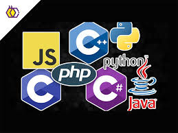
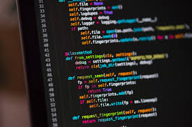

La programación es el proceso mediante el cual se crean instrucciones que le indican a una computadora qué tareas debe realizar. Estas instrucciones se escriben utilizando lenguajes de programación, que son sistemas diseñados para comunicarse con las máquinas. A través de la programación, se pueden desarrollar aplicaciones, videojuegos, páginas web y sistemas informáticos que facilitan muchas actividades de la vida diaria. Además, la programación fomenta el pensamiento lógico, la creatividad y la capacidad de resolver problemas de manera estructurada.
Los lenguajes de programación son los medios que utilizan los programadores para comunicarse con las computadoras y darles instrucciones. Existen muchos tipos de lenguajes, cada uno con características específicas según su uso. Algunos de los más conocidos son Java, Python y JavaScript, los cuales se utilizan para crear desde aplicaciones móviles hasta sitios web interactivos. Cada lenguaje tiene su propia sintaxis y reglas, pero todos tienen el mismo objetivo: permitir que la computadora entienda y ejecute las órdenes que se le dan.

Un algoritmo es un conjunto de pasos ordenados y definidos que se siguen para resolver un problema o realizar una tarea. Es la base de la programación, ya que antes de escribir código, es necesario pensar y organizar las instrucciones de manera lógica. Los algoritmos pueden aplicarse tanto en la vida cotidiana, como en recetas de cocina o instrucciones para armar algo, como en la informática, donde ayudan a desarrollar programas eficientes y funcionales.

La programación es muy importante en la actualidad, ya que permite el desarrollo de tecnologías que utilizamos todos los días, como aplicaciones móviles, redes sociales, sistemas bancarios y plataformas educativas. Gracias a la programación, es posible automatizar procesos, mejorar la comunicación y facilitar el acceso a la información. Además, es una habilidad cada vez más demandada en el mundo laboral, ya que forma parte fundamental del avance tecnológico y la innovación.
Para aprender más:
| Nombre | Enlace |
|---|---|
| Video de computación | Ver video |